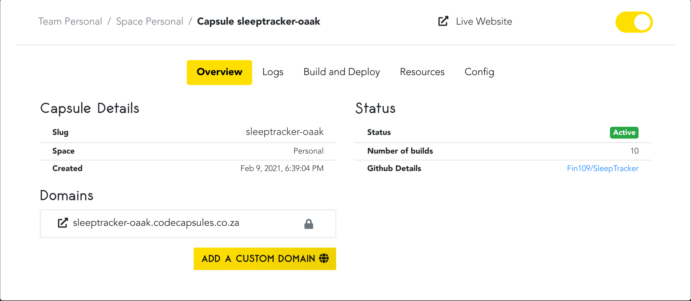
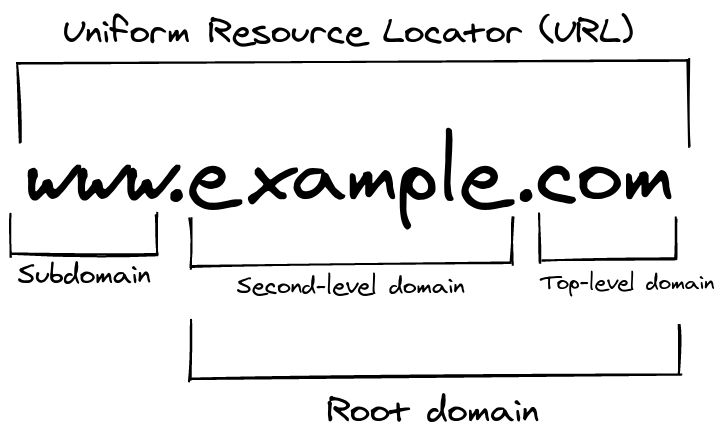

Custom Domains
For every application deployed to Code Capsules, Code Capsules provides a default domain that looks something like this: capsulename.xxxx.codecapsules.co.za. If you have purchased a domain like example.com from a domain registrar and would like to replace it with the default Code Capsules domain, Code Capsules lets you use your own domain instead (for free).
You can find everything relating to your Capsule's domains (including your default domain) under the "Overview" tab in the Capsule. This is also where you can add a purchased custom domain to your application.
How to Add a Custom Domain
To add a custom domain to your application on Code Capsules, click on the "Overview" tab in the Capsule hosting your application. Under Domains, you'll see all of the domains associated with your Capsule; including the default domain provided by Code Capsules.
There is also an "Add a Custom Domain" button at the bottom of the page.

Before adding a custom domain, consider: - Your capsule may route to only one root domain. You may not add multiple root domains to your Capsule.
To add a custom domain:
- Click the "Add a Custom Domain" button.
- Save the IP address provided under "A Record Route" (this will be used shortly).
- Enter the custom domain you've purchased from a domain registrar under "Domain Name".
- Make sure that you've entered a root domain only - do not include a subdomain.
- A root domain contains only your domain name and your top-level domain (TLD). Take
example.com. Here, "example" is the domain name, and ".com" is the TLD.
Once you've entered your root domain, add it by clicking the Create Domain button.
Creating an A record
After adding your custom domain on Code Capsules, you need to create an A record for the domain you've purchased. You'll use the IP that was saved previously when creating the A record for your domain. You can add an A record to your purchased domain by visiting your domain registrar's website.
Your A record table should look something like this:
| Record Type | Name | IPv4 Address |
|---|---|---|
| A Record | @ | provided-IP-Address |
where,
-
"@" refers to your root domain.
-
provided-IP-Addressis the IP address found previously under "A Record Route"
Consult your domain registrar for specific instructions on adding A records to your domain. Keep in mind, when making changes to your domain's DNS records, changes may take several hours to take effect.
How to Add a Subdomain
Before adding a subdomain to your application hosted on Code Capsules, make sure you have already created an A record for your purchased domain that routes to an application on Code Capsules.
When adding a subdomain to your application hosted on Code Capsules, keep in mind:
- Applications hosted on Code Capsules can have a maximum of five subdomains.
- Wildcard subdomains are not allowed on Code Capsules - you'll need to create a CNAME record in your purchased domain for each subdomain you want to create.
To add a subdomain for your application, follow the same process detailed previously, with some changes:
- This time you must include the subdomain you want to create. This means that instead of entering the root domain
domain-name.tld, you should specify your subdomain as well, such as:app.example.com. - You do not need to save the IP address provided under "A Record Route" when adding subdomains on Code Capsules.
After clicking the Create Domain button, you must create a CNAME record for your purchased domain with information about the subdomain you'd like to create.
Creating CNAME Records
Creating CNAME records for purchased domains vary for different domain registrars. Consult your domain registrar for information on creating CNAME records.
In general, the CNAME record table for your domain should look something like this:
| Record Type | Name | Host/Target |
|---|---|---|
| CNAME | subdomain |
your-root-domain |
where,
subdomainis the subdomain you would like to create (e.g.app,www)your-root-domainis your root domain that contains an A record routing to your application on Code Capsules.
As with adding an A record, CNAME records or any other changes to your domain's DNS records may take several hours to take effect.
Removing Domains and Subdomains
If you would like to remove any domains or subdomains associated with your Capsule, navigate to the "Overview" tab in your Capsule. Under Domains, you will see a list of all the domains that are associated with your Capsule.
Next to each custom domain and subdomain, you'll find a trash can icon. Click the trash can icon to remove the custom domain or subdomain.
Note, removing a custom domain or subdomain does not affect your domain's DNS records:
-
When removing a root domain on Code Capsules, your A record will still be associated with the IP address provided by Code Capsules. Make sure to revert your domain's A record to its default value.
-
When removing a subdomain on Code Capsules, make sure to delete the corresponding CNAME record in your purchased domain.
Glossary of Terms & Concepts
Here is a list of defined terms and concepts used throughout this article. Divided into three sections, here you'll find definitions for: structures related to URLs, DNS records, and information related to HTTP.
Makeup of a URL

-
Uniform Resource Locator (URL): In the above image,
www.example.comis the URL. A URL is a combination of three different aspects of a domain: A subdomain, a second-level domain, and a top-level domain. -
Subdomain: Subdomains are the first part of a URL, the most common being
www. Subdomains provide users with a consistent naming strategy to access service you may provide (for example,hr.myapplication.commay route users to your business' human resources portal). -
Second-level domain (SLD): Second level domains make up the middle of a URL. This is your domain's name.
-
Top-level domain (TLD): Top-level domains are the text at the right-hand side of a URL. TLDs give users an idea about your website. For example, the
.deTLD lets users know the website probably caters to a German audience. -
Root Domain: The root domain is a combination of a second-level and top-level domain without a subdomain.
example.comis an example of a root domain, whereaswww.example.comis not a root domain.
DNS records
-
Domain Registrar: A company that sells and manages domains.
-
A Record: An A record routes a domain (e.g.
example.comto an IP addresses (e.g.123.456.567.8) -
Wildcard subdomain: A wildcard subdomain points all subdomains not created for your purchased domain to a specific place. For example, if a wildcard subdomain was created for
example.com, and the subdomainsinfoand123were not created forexample.com, bothinfo.example.comand123.example.comwould route toexample.com. -
CNAME Record: A CNAME record, also known as an alias, routes subdomains to other domain names. For example,
mail.example.commay route tomail.google.com. CNAME records are unlike A records, which route to a specific IP address.
HTTP and SSL
-
Hypertext Transfer Protocol (HTTP): HTTP is a protocol for transferring data from a server (a web-application) to a client (your web-browser).
-
Hypertext Transfer Protocol Secure (HTTPS): HTTPS is like HTTP, except the data transferred from the server to client is encrypted for better security.
-
Secure Sockets Layer Certificate (SSL): An SSL Certificate authenticates a domain and allows encrypted information to send to the domains server - with an SSL certificate you can connect to your domain via HTTPS, i.e: https://www.example.com.